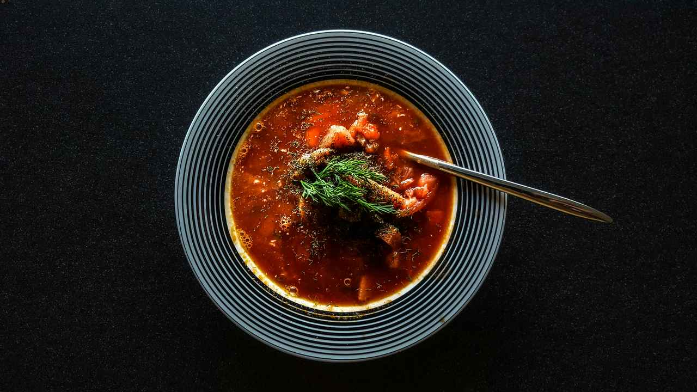
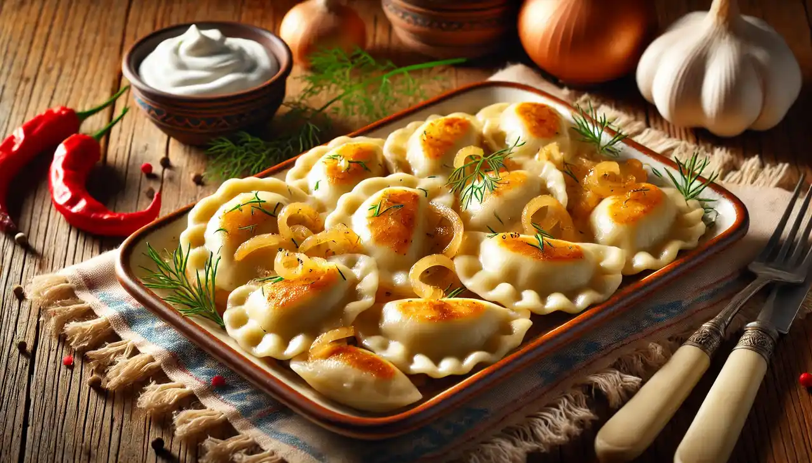
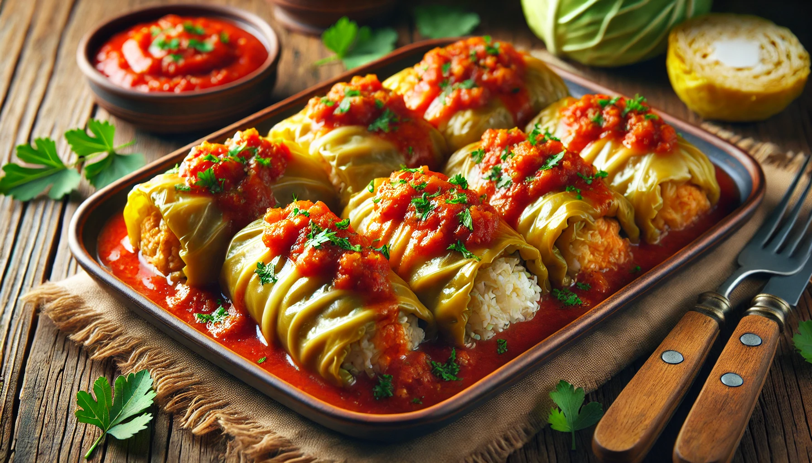
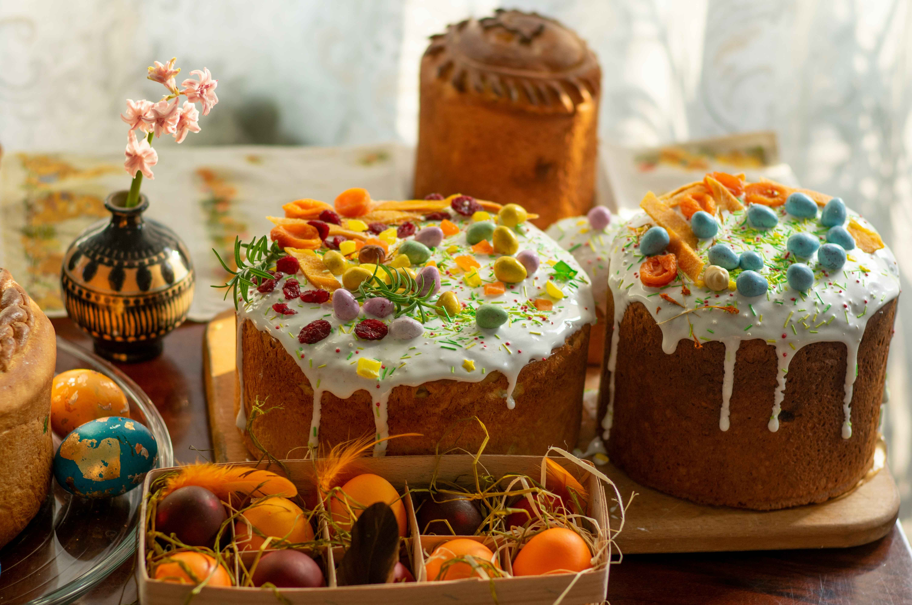

Borsh
Borsh is a traditional Ukrainian beetroot soup that is both hearty and delicious. Typically served with a dollop of sour cream, this vibrant dish is packed with vegetables like cabbage, potatoes, and carrots. It's a staple of Ukrainian cuisine and represents the warmth of home-cooked meals.
Varenyky
Varenyky are Ukrainian dumplings, often filled with mashed potatoes, cheese, mushrooms, or cherries. They are usually boiled and served with butter or sour cream. These versatile dumplings are a cherished part of Ukrainian culinary traditions, enjoyed both as a savory meal or a sweet dessert.
Holubtsi
Holubtsi are stuffed cabbage rolls, filled with a mixture of minced meat and rice or buckwheat, then simmered in a savory tomato sauce. This comforting dish is a staple at Ukrainian family gatherings and festive occasions.
Paska
Paska is a traditional Ukrainian Easter bread, known for its slightly sweet flavor and beautifully decorated top. It's often baked with symbolic patterns, representing religious and cultural traditions, and shared during Easter celebrations.